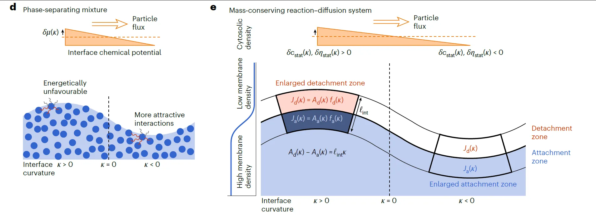

引言：从静态势能面到守恒动力学流场¶
在前面的课程中，非线性动力系统的理论框架已逐步构建完成。从第9讲与第10讲引入的 Ginzburg-Landau 理论与 Model A (Allen-Cahn 方程) 中，可以清晰地看到非守恒序参量（如磁化强度）如何通过曲率驱动流实现能量弛豫。在该模型下，液滴可以通过局部的有序度翻转直接产生或湮灭，而不受物质总量的限制。然而，对于软凝聚态物理与生物物理中广泛存在的液态混合物而言，物理过程受到更为严格的局部质量守恒约束。
第11讲对液态混合物热力学进行了讨论，基于不可压缩性（Incompressibility）这一核心假设，构建了多组分液态混合物的自由能景观，并通过麦克斯韦构造（Maxwell Construction）确定了相分离的平衡终态。然而，热力学仅能指明系统的最低能量状态（如 P 颗粒的形成）或演化趋势，却无法描述系统如何从不稳定的均匀态演化至分层的平衡态，亦无法刻画演化的具体路径、速率及由此产生的时空斑图。要理解细胞内瞬息万变的动态结构，必须将视线从静态的亥姆霍兹自由能函数 \(f(\phi)\) 投向描述物质输运的非平衡动力学方程。
这节课将跨越静态势能面与动态演化之间的鸿沟，从宏观热力学势出发，推导描述守恒型序参量演化的动力学方程——Cahn-Hilliard 方程（Model B）。Erwin Frey 教授首先回顾了自由能景观与相稳定性的几何解释，随后深入剖析连接宏观现象与微观驱动力的两个关键物理量：渗透压（Osmotic Pressure）和交换化学势（Exchange Chemical Potential）。特别是在细胞这一“恒定体积”与“不可压缩”的双重约束下，交换化学势梯度的建立揭示了物质输运的根本动力学机制。
基于质量守恒定律（连续性方程）与昂萨格倒易关系（Onsager Reciprocal Relations），课程将推导出描述相分离动力学的通量公式 \(\vec{j}(\vec{x}, t)\)。这一推导将揭示在热力学失稳区域（Spinodal region）出现的反直觉的“负扩散”现象——即物质逆着浓度梯度自发聚集。这不仅是 Fick 扩散定律在非理想混合物中的推广，更是自发相分离（Spinodal Decomposition）和模式形成的数学本质。
这节课建立的宏观场论方程将为后续课程奠定框架基础。在下一讲中，课程将进一步深入微观层面，从统计力学角度推导本讲中唯象引入的自由能函数形式及混合熵表达式（Flory-Huggins 理论），从而完成从微观相互作用到宏观相分离动力学的完整理论闭环。
1. 热力学稳定性回顾与相图构建¶
在建立描述液态混合物时间演化的动力学方程之前，首先需要明确系统的演化由热力学势能面决定的稳定性特征。对于由序参量（溶质体积份数）\(\phi\) 描述的二元液态混合物，其热力学性质完全蕴含于亥姆霍兹自由能密度（Helmholtz free energy density）\(f(\phi)\) 之中。其动力学的本质，是系统在趋向自由能最小化的过程中，如何响应局部的热力学驱动力。这小节先回顾上一讲自由能景观（Landscape）的几何特征，并通过麦克斯韦构造（Maxwell Construction）确定相分离的平衡终态，为后续推导 Cahn-Hilliard 方程奠定静态基础。
1.1 自由能景观的几何特征与稳定性判据¶
自由能密度 \(f(\phi)\) 随浓度 \(\phi\) 的变化曲线不仅决定了系统的平衡状态，其几何曲率（即二阶导数 \(f''(\phi)\) 的符号）更是判断混合物局部稳定性的核心判据。

自由能景观与相分离的热力学基础。左图展示了双势阱自由能密度曲线 \(f(\phi)\)。其中红色箭头指示了在非稳区（Spinodal regime, \(f''<0\)）的系统对微小扰动不稳定，将自发相分离。平衡态的共存浓度 \(\phi_a\) 和 \(\phi_b\) 由麦克斯韦公切线构造（Common Tangent Construction）确定，该构造对应于两相化学势相等和渗透压相等的物理条件。右图为对应的温度-浓度相图，展示了双节线（Binodal，蓝色区域边界）与旋节线（Spinodal，绿色区域边界）所划分的稳定、亚稳及不稳定区域。
1.1.1 稳定区（Stable Regime）¶
当自由能曲线处于凸（convex）区间，即满足二阶导数条件：
系统处于热力学稳定状态。物理上，这意味着任何微小的局部浓度涨落 \(\delta \phi\) 都会导致系统总自由能的增加（\(\Delta F > 0\)）。根据热力学第二定律，系统倾向于最小化自由能，因此这些涨落会被自发抑制，混合物将保持宏观均一状态。在相图中，这一区域位于双节线（Binodal line）之外。
1.1.2 非稳区（Unstable / Spinodal Regime）¶
当自由能曲线处于凹（concave）区间，即满足：
系统处于热力学不稳定状态，这一区域被称为旋节线区（Spinodal Region）。在此区域内，自由能函数对浓度的二阶导数为负，意味着浓度的微小不均匀性会导致系统总自由能降低。因此，系统对任何长波微扰都是不稳定的，将发生自发的、无势垒的相分离，即旋节线分解（Spinodal Decomposition）。这一过程表现为浓度波动的振幅随时间指数增长，是本讲动力学部分关注的重点。
1.1.3 亚稳区（Metastable Regime）¶
在稳定区与非稳区之间，存在着 \(f''(\phi) > 0\) 但总自由能并非全局最低的区域。这一区域介于双节线（Binodal）与旋节线（Spinodal）之间。在此状态下，虽然系统对微小扰动是线性稳定的，但存在更低能量的分相状态。系统必须通过跨越自由能势垒的大幅度涨落——即成核与生长（Nucleation and Growth）过程——才能进入相分离状态。正如 Frey 教授所指出，这需要“有限大小的扰动”来触发。
1.2 麦克斯韦构造与杠杆规则的几何意义¶
当系统处于不稳定或亚稳态时，热力学平衡态并非均一混合物，而是分裂成两个共存的相：富集溶质的相（浓度 \(\phi_a\)）和贫瘠溶质的相（浓度 \(\phi_b\)）。这两个平衡浓度由麦克斯韦公切线构造（Maxwell Common Tangent Construction）唯一确定。
1.2.1 公切线的几何定义与物理对应¶
几何上，寻找平衡浓度等价于在 \(f(\phi)\) 曲线上寻找两点 \(\phi_a\) 和 \(\phi_b\)，使得连接这两点的直线与曲线在两点处同时相切。这意味着这两点不仅共享同一条切线，而且切线的斜率和截距必须分别相等。
1. 斜率相等条件：
这一数学条件对应着深刻的物理意义：两相的交换化学势（Exchange Chemical Potential）相等。交换化学势定义为 \(\bar{\mu} = \partial f / \partial \phi\)，代表了交换粒子所需的能量代价。势能相等意味着两相间没有净的粒子扩散流，实现了化学平衡。
2. 截距相等条件：
切线在纵轴上的截距由 Legendre 变换给出：\(f(\phi) - \phi f'(\phi)\)。两点截距相等即：
这一条件在物理上对应于两相的渗透压（Osmotic Pressure, \(\Pi\)）相等（在第2小节将详细推导 \(\Pi \approx \phi f' - f\)）。渗透压代表了维持相界面的力学平衡条件，即力学平衡。
1.2.2 杠杆规则（Lever Rule）¶
一旦确定了共存浓度 \(\phi_a\) 和 \(\phi_b\)，两相在宏观系统中所占的体积 \(V_a\) 和 \(V_b\) 受到质量守恒和体积守恒的严格约束。对于总体积 \(V\) 和平均浓度 \(\phi\) 的系统：
解此方程组可得杠杆规则：
该规则形象地表明，系统的状态点 \(\phi\) 像是落在连接 \(\phi_a\) 和 \(\phi_b\) 的杠杆支点上，两相的体积比与支点到端点的距离成反比。
1.3 动力学现象的唯象展示¶
为了建立对相分离动力学的直观认识，课堂上还展示了之前展示过的数值模拟的演化过程，系统从不稳定状态向平衡态演化的时空图景。

旋节线分解（Spinodal Decomposition）的动力学演化。左图为相图示意，右图为数值模拟动图。在不稳定区内（Spinodal region），均一系统自发失稳，形成特征性的迷宫状（labyrinthine）或双连续（bi-continuous）花纹。随着时间推移，这些花纹会发生粗化（Coarsening），最终演化为宏观分离的相。
-
初始淬火（Quench）： 过程开始于一个宏观上均一但微观上充满随机热涨落的状态。这对应于将高温下的均一混合物突然冷却（Quench）至相图中的旋节线区域。此时，系统处于热力学不稳定状态。
-
早期演化（Early Stage）： 由于 \(f''(\phi) < 0\)，微小的浓度涨落被迅速放大。图像上呈现出特征性的迷宫状结构。这种模式的特征波长由最快生长模式决定，是线性不稳定性分析的直接结果。
-
粗化阶段（Coarsening）： 随着时间推移，相分离出的富集区和贫瘠区逐渐合并。小液滴消失，大液滴生长，界面曲率逐渐减小。这一过程由界面张力驱动，旨在最小化系统的总界面面积，从而降低界面自由能。
-
最终态（Final State）： 演化持续进行，直到系统完全分离成两个宏观区域，浓度分别稳定在 \(\phi_a\) 和 \(\phi_b\)，达到热力学平衡。
这一从无序到有序、从均一到分相的时空演化过程，正是这节课试图通过构建 Cahn-Hilliard 方程及其物理机制来捕捉的核心内容。
2. 渗透压：物理图像与数学微观推导¶
在上一小节关于麦克斯韦构造的讨论中，切线截距相等的几何条件隐含了系统相平衡的关键物理约束。为了赋予这一几何特征以明确的物理意义，这小节引入并详细推导渗透压（Osmotic Pressure, \(\Pi\)）。
在生物物理和软物质系统中，渗透压不仅是维持细胞形态和驱动膜输运的关键力学量，更是理解混合物热力学稳定性与相分离机制的基石。因此我们将从宏观的半透膜模型出发，结合微观的自由能密度函数，建立渗透压与亥姆霍兹自由能之间的严格数学联系。
2.1 半透膜模型的物理图景¶
为了定义渗透压，首先构建一个经典的热力学理想实验模型：考虑一个被半透膜（Semi-permeable wall）分隔的刚性容器。

渗透压的微观物理模型。图示为一个被半透膜分隔的容器，膜仅允许溶剂通过而阻挡溶质粒子。左侧为溶质浓度为 \(\phi\) 的溶液，右侧为纯溶剂。渗透压 \(\Pi\) 定义为维持体积不变所需的额外机械压力，其本质源于溶质粒子的熵力。在不可压缩流体的动力学中，渗透压梯度的存在（结合交换化学势）是驱动物质输运、导致相分离演化的核心热力学驱动力。
系统设置与边界条件：
-
半透膜特性：该膜具有选择透过性，仅允许溶剂分子（Solvent, S）自由通过，而严格阻挡溶质粒子（Particle/Solute, P）。这意味着溶剂可以在两室之间达到化学平衡，而溶质被禁锢在特定区域。
-
状态描述：膜的左侧盛装体积为 \(V\)、溶质体积分数为 \(\phi\) 的溶液；膜的右侧则是无限大的纯溶剂库（\(\phi=0\)）。
平衡机制： 由于左侧存在溶质，导致溶剂的化学势降低（熵增加），右侧的纯溶剂倾向于自发穿过膜进入左侧以稀释溶液。为了阻止这种净流动并维持左侧体积 \(V\) 不变，必须在左侧施加一个额外的机械压力。这个为了抵抗溶剂自然渗透趋势而施加的额外压强，即定义为渗透压 \(\Pi\) 。
2.2 渗透压的热力学严格推导¶
从能量守恒的角度审视，渗透压对应于系统在体积可逆变化过程中对外所做的功。假设将半透膜向右移动微小距离，使得溶液体积增加 \(dV\)（同时纯溶剂体积减少 \(dV\)，保持总体积 \(V_{total}\) 不变）。
在此过程中，外界必须克服渗透压做功，即系统对外做功 \(dW_{ext} = \Pi dV\)。根据热力学关系，这部分功等于系统总亥姆霍兹自由能 \(F_{total}\) 的减少量。因此，渗透压可定义为总自由能对溶液体积的偏导数的负值：
系统的总自由能 \(F_{total}\) 由两部分组成：左侧溶液的自由能和右侧纯溶剂的自由能：
其中 \(f(\phi)\) 是溶液的亥姆霍兹自由能密度（单位体积自由能），\(f(0)\) 是纯溶剂的自由能密度。
关键推导步骤：
在对体积 \(V\) 求导时，必须注意到溶液的体积分数 \(\phi\) 本身也是 \(V\) 的函数。因为溶质粒子总数 \(N_p\) 被半透膜禁锢在左侧体积 \(V\) 内，根据 \(\phi\) 的定义 \(\phi = N_p v_p / V\)（假设溶质分子体积为 \(v_p\)），根据链式法则有：
将此关系代入渗透压的定义式进行计算：
整理后，得到渗透压与自由能密度的普适关系式：
物理意义：
这一公式在数学形式上简洁优美，而且直接对应了上一节麦克斯韦构造中的截距条件。
-
\(f(\phi) - \phi f'(\phi)\) 正是过点 \((\phi, f(\phi))\) 的切线在纵轴（\(f\) 轴）上的截距的负值（相对于 \(f(0)\)）。
-
如果在 \(\phi_a\) 和 \(\phi_b\) 两相共存时要求渗透压相等（\(\Pi(\phi_a) = \Pi(\phi_b)\)），则意味着两点处的切线截距必须相等。
-
这证明了麦克斯韦构造的几何切线截距确实代表了物理上的力学平衡条件：在相分离的最终状态，共存的两相界面两侧必须达到力学平衡，即渗透压相等，否则界面将发生移动。
2.3 范特霍夫定律与维里展开：从理想气体到相互作用¶
为了将抽象的热力学公式联系到具体的实验测量并揭示微观相互作用，教授进一步探讨了渗透压在稀溶液极限下的行为，并引入了维里展开（Virial Expansion）。
2.3.1 范特霍夫定律（Van't Hoff Law）¶
对于极稀溶液（\(\phi \ll 1\)），溶质粒子间的距离很远，相互作用可以忽略，它们的行为类似于理想气体分子。此时，自由能密度主要由混合熵贡献。实验测量的渗透压遵循著名的范特霍夫定律：
这与理想气体状态方程 \(PV = N k_B T\) （即 \(P = \frac{N}{V} k_B T = \frac{\phi}{v_p} k_B T\)）在形式上完全一致。
物理本质：这是一种纯粹的熵力（Entropic force）。溶质粒子撞击半透膜产生的“压力”，源于它们在溶液中通过布朗运动探索相空间体积的倾向（平动熵）。这一极限定律为校准自由能密度的低浓度行为提供了基准。
2.3.2 维里展开与相互作用系数¶
随着浓度 \(\phi\) 的增加，溶质粒子间的相互作用不再可忽略。为了描述这种偏差，渗透压通常展开为浓度的幂级数，即维里展开：
这里的展开系数 \(A_2, A_3\) 具有深刻的微观物理含义，特别是第二维里系数 \(A_2\)：
-
\(A_2 > 0\)（排斥作用）：粒子倾向于相互远离（如硬球排斥）。这增加了粒子撞击膜的有效频率，导致渗透压升高，促进溶液的混合与稳定。
-
\(A_2 < 0\)（吸引作用）：粒子倾向于相互聚集。这种吸引作用降低了粒子撞击膜的有效压力（渗透压降低）。正是这种负的第二维里系数（吸引相互作用）导致了自由能曲线在中间浓度出现凹陷（\(f'' < 0\)），从而引发相分离。这为理解相分离提供了微观力学视角：相分离本质上是粒子间吸引力战胜了混合熵力的结果。
利用渗透压公式的微分形式 \(\Pi(\phi) = \phi^2 \frac{\partial}{\partial \phi} \left(\frac{f(\phi)}{\phi}\right)\)（假设 \(f(0)=0\)），可以通过对实验测量的渗透压曲线进行积分，反推出自由能密度的解析形式：
其中 \(\phi \ln \phi\) 项正是著名的混合熵（Mixing Entropy）项，它总是倾向于混合；而 \(A_2 \phi^2\) 等高阶项则代表焓的贡献。这一结构将在下一讲（第13讲）中通过格子气模型（Lattice Gas Model）和 Flory-Huggins 理论得到微观统计力学的严格推导。
3. 交换化学势：不可压缩系统中的驱动力¶
在确立了渗透压作为麦克斯韦构造中截距相等条件的物理对应后，分析的焦点转向了切线斜率相等的几何条件。在经典热力学中，斜率对应于化学势的平衡。然而，对于生物细胞及软物质系统而言，物理环境往往受到不可压缩性（Incompressibility）与固定体积的双重约束。这使得基于“添加粒子导致体积膨胀”的经典化学势定义不再适用。
教授引入了交换化学势（Exchange Chemical Potential）的概念，这不仅解决了理论上的定义难题，更揭示了细胞内物质输运的根本动力学机制——物质的移动本质上是一种置换过程。
3.1 经典定义的局限与不可压缩性约束¶
在经典热力学框架下，组分 \(i\) 的化学势 \(\mu_i\) 通常定义为吉布斯自由能 \(G\) 对粒子数 \(N_i\) 的偏导数：
该定义隐含了一个物理操作：向系统中添加一个 \(i\) 粒子，同时保持其他组分粒子数 \(N_j\) 不变。在恒压条件下，对于凝聚态物质，增加粒子必然导致系统总体积 \(V\) 的膨胀。
然而，生物细胞内部是一个高度拥挤（Crowded）且受到细胞膜几何约束的环境。在这种环境下，系统必须遵循严格的体积守恒约束。如果假设流体是不可压缩的，即分子体积 \(v_i\) 为常数，则总体积 \(V\) 与粒子数之间存在刚性约束：\(V = \sum N_i v_i\)。
在这种恒定体积 \(V\) 的约束下，单纯“塞入”一个粒子而不移除其他粒子是不合法的物理操作，因为它违反了不可压缩性条件。因此，必须寻找一个新的热力学量来描述这种受限环境下的能量变化。
3.2 交换化学势的定义与推导¶
在固定体积 \(V\) 的限制下，改变系统组成的唯一自然方式是交换（Exchange）：为了在体积 \(V\) 内放入一个溶质粒子（Solute P），必须同时移出一个或多个溶剂分子（Solvent S）以腾出空间。假设溶质与溶剂的分子体积相近（\(v_p \approx v_s\)），这一过程即为等体积的粒子置换。
基于此，这节课引入了交换化学势 \(\bar{\mu}_p\) ，定义为在保持体积 \(V\)（以及温度 \(T\)、压力 \(P\)）不变的情况下，吉布斯自由能随溶质粒子数的变化：
这实际上是一个勒让德变换后的偏导数，反映了在体积约束下的能量代价。为了建立其与自由能密度 \(f(\phi)\) 的关系，利用第11讲中建立的热力学关系式 \(G = V [P + f(\phi)]\)（其中 \(P\) 为外部压力，\(f(\phi)\) 为亥姆霍兹自由能密度）。
推导过程：
应用链式法则，对 \(G\) 求关于 \(N_p\) 的偏导数，注意此时 \(V\) 被视为常数：
根据体积分数定义 \(\phi = \frac{N_p v_p}{V}\)，其对粒子数的导数为：
将此结果代入上式，体积 \(V\) 相互抵消，得到简洁的解析表达式：
同理，对于溶剂（Solvent S），由于增加溶剂意味着降低溶质浓度（\(\partial \phi / \partial N_s < 0\)），可以推导出溶剂的交换化学势：
这一组公式揭示了物理联系：亥姆霍兹自由能密度的斜率 \(f'(\phi)\)，在物理本质上正是归一化后的交换化学势。
3.3 统一的物理图像与生物学意义¶
通过引入交换化学势，麦克斯韦构造中的斜率相等条件 \(f'(\phi_a) = f'(\phi_b)\) 获得了明确的物理诠释：
这表明，在相分离的平衡态，两相之间的交换化学势必须相等。物理上，这意味着将一个粒子从富集相（A相）交换到贫瘠相（B相）不需要消耗净能量，系统达到了化学平衡。
结合前一节关于渗透压（力学平衡）的讨论，麦克斯韦构造统一了相分离的两个热力学支柱：
-
截距相等 \(\leftrightarrow\) 渗透压相等 \(\leftrightarrow\) 力学平衡（界面不移动）。
-
斜率相等 \(\leftrightarrow\) 交换化学势相等 \(\leftrightarrow\) 化学平衡（无净粒子流）。
生物学意义： 在细胞生物学语境下，这一概念至关重要。它说明蛋白质或其他生物大分子在细胞质中的聚集与分散，不应被视为在真空中自由粒子的运动，而必须被理解为溶质与溶剂分子的竞争性置换。驱动物质输运的“力”并非绝对的化学势梯度，而是相对于溶剂的交换化学势梯度 \(\nabla \bar{\mu}\)。这一结论为下一节推导 Cahn-Hilliard 动力学方程中的通量项提供了直接的物理依据。
4. 非平衡动力学：从昂萨格倒易关系到负扩散¶
至此，关于液态混合物的静态热力学描述——包括自由能景观、渗透压以及交换化学势——已构建完毕。
然而，热力学仅能判定系统的平衡状态或演化趋势，无法描述演化的速率与路径。为了捕捉相分离的时空特征，必须将时间变量 \(t\) 引入理论框架，构建描述浓度场 \(\phi(\mathbf{x}, t)\) 随时间演化的偏微分方程。这小节将从守恒律出发，结合非平衡热力学的线性响应理论，推导出支配混合物动力学的核心方程，从而实现从静态势能面迈向动态流场的关键跨越。
4.1 连续性方程（守恒律）¶
在液态混合物系统中，溶质粒子受到局部质量守恒的严格约束。在没有化学反应生成或消耗粒子的前提下，溶质既不能凭空产生，也不能凭空消失，只能通过流动的形式在空间中重新分布。因此，浓度场 \(\phi(\mathbf{x}, t)\) 的时间演化必须遵循连续性方程（Continuity Equation）：
其中 \(\mathbf{J}(\mathbf{x}, t)\) 代表粒子流通量（Flux Current），其物理意义是单位时间内通过单位面积截面的粒子体积（或数量）。该方程表明，空间中某一点局部浓度的变化率（\(\partial_t \phi\)）完全由该点处物质流出的净通量散度（\(\nabla \cdot \mathbf{J}\)）决定。这是构建任何守恒型动力学（Model B）的数学起点。
4.2 昂萨格理论与热力学驱动力¶
确立了守恒律后，问题的核心转化为：如何确定流 \(\mathbf{J}\) 的具体形式？
根据非平衡热力学（Non-equilibrium Thermodynamics），物质流是由热力学广义力（Thermodynamic Force）驱动的。当系统偏离平衡态时，空间中存在的化学势梯度构成了驱动力，驱使物质流动以消除这些梯度，从而使系统恢复到化学势处处相等的平衡态。
在近平衡态区域，应用昂萨格线性响应理论（Onsager Linear Response Theory），流与热力学力之间存在线性关系：
该公式各项的物理含义如下：
-
\(\nabla \bar{\mu}\)：驱动力，即交换化学势的梯度。注意这里使用的是第3小节推导出的交换化学势 \(\bar{\mu}\)，因为它正确描述了不可压缩流体中的粒子置换过程。
-
\(\Lambda\)：昂萨格系数（Onsager Coefficient），也称为迁移率（Mobility）。它表征了系统对热力学驱动力的响应能力，通常依赖于温度 \(T\) 和局部浓度 \(\phi\)。
-
负号：表示物质流向化学势降低的方向（从高势能区流向低势能区），这保证了熵产生的非负性。
根据热力学第二定律，为了保证过程中的能量耗散（熵增），昂萨格系数必须为正值（\(\Lambda > 0\)）。
4.3 动力学方程的推导与有效扩散系数¶
为了得到封闭的浓度演化方程，需要将流 \(\mathbf{J}\) 表达为浓度 \(\phi\) 的函数。利用第3小节推导出的交换化学势与自由能密度的关系式 \(\bar{\mu}_p \approx v_p f'(\phi)\)（忽略常数项），应用链式法则计算其梯度：
将此梯度表达式代入昂萨格输运方程：
最后，将粒子流代入连续性方程，即得到描述浓度场演化的非线性偏微分方程：
为了深入分析该方程的物理性质，可以将其与经典的菲克第二定律（Fick's Second Law） \(\frac{\partial \phi}{\partial t} = \nabla \cdot (D \nabla \phi)\) 进行类比。由此定义系统的有效扩散系数（Effective Diffusion Coefficient）：
这一结果深刻地揭示了扩散的微观热力学起源：宏观的扩散系数并非单纯的常数，而是由动力学迁移率 \(\Lambda(\phi)\) 和热力学驱动力因子 \(f''(\phi)\)（自由能曲率）共同决定的。
4.4 稳定性分析：正扩散与负扩散¶
有效扩散系数 \(D_{\text{eff}}\) 的符号直接决定了系统的动力学演化行为，这是理解相分离机制的关键。
1. 稳定区（Stable Regime, \(f'' > 0\)）¶
当系统处于相图的稳定区时，自由能曲线是凸的（\(f'' > 0\)）。由于迁移率 \(\Lambda > 0\) 且分子体积 \(v_p > 0\)，此时有效扩散系数恒为正值：
这对应于经典的正扩散（Fickian Diffusion）。物质顺着浓度梯度从高浓度流向低浓度，任何局部的浓度涨落都会被耗散抹平，系统趋于均一。
昂萨格系数的浓度依赖性
教授特别指出，在稀溶液极限下（\(\phi \ll 1\)），自由能主要由混合熵主导，即 \(f(\phi) \sim \phi \ln \phi\)，导致二阶导数 \(f''(\phi) \sim 1/\phi\)。为了使宏观扩散系数 \(D_{\text{eff}}\) 回归到常数 \(D\)（布朗运动行为），昂萨格系数必须具有如下形式：
这意味着迁移率并非从空间上均匀的，而是正比于局部粒子浓度。这一推导验证了昂萨格理论在稀溶液极限下的自洽性。
2. 非稳区（Spinodal Regime, \(f'' < 0\)）¶
这是相变动力学中最引人注目的情形。当系统被淬火至旋节线区域内，自由能曲线呈现凹形（\(f'' < 0\)），导致有效扩散系数变为负值：
负扩散（Negative Diffusion）意味着物质流的方向发生了根本性反转：物质逆着浓度梯度流动，即从低浓度区域自发流向高浓度区域。
物理后果：上坡扩散（Uphill Diffusion）
原本微小的浓度高点非但不会弥散，反而因为不断从周围吸纳物质而变得更高；周围的低浓度区域则因物质流失而变得更低。这种正反馈机制导致了系统对长波涨落的自发失稳，浓度波动迅速放大，形成了之前视频演示中观察到的迷宫状斑图。这正是旋节线分解（Spinodal Decomposition）的微观动力学起源——负扩散系数驱动的不稳定性。
5. Cahn-Hilliard 方程（Model B）：从局部到非局部¶
在前一节的推导中，基于局域自由能密度的动力学方程 \(\partial_t \phi = \nabla \cdot (\Lambda f'' \nabla \phi)\) 虽然在数学上成功预言了旋节线区域内的“负扩散”现象，但在物理上却面临着严重的正则性问题。单纯的负扩散机制会导致短波长（高频）模式的增长率无限大，使得浓度梯度趋于无穷，形成非物理的数学奇点，这意味着界面宽度将无限变窄直至崩溃。
为了描述物理上真实的相分离过程，特别是要形成具有有限宽度的稳定界面，必须引入一种机制来惩罚过大的浓度梯度。因此，教授进一步引入了Cahn-Hilliard 方程（在动力系统分类中被称为 Model B）。该方程通过在自由能中引入非局部的梯度项，引入了界面张力的物理效应，从而在维持长波失稳的同时抑制了短波发散，描述了守恒型序参量从失稳分解到后期粗化的完整动力学。
5.1 梯度能项与广义化学势¶
Cahn 和 Hilliard 指出，非均匀系统的总自由能不仅取决于局部的浓度 \(\phi(\mathbf{x})\)，还取决于浓度在空间的变化率（梯度）。因此，系统的自由能泛函应修正为 Ginzburg-Landau 形式：
公式各项物理意义如下： * \(f(\phi)\) ：局域自由能密度（双势阱）。它驱动系统局部浓度向平衡值 \(\phi_a, \phi_b\) 分离。
- \(\frac{\kappa}{2} (\nabla \phi)^2\)：梯度能项（Gradient Energy Term）。系数 \(\kappa > 0\) 与界面张力直接相关。这一项的存在意味着任何梯度的产生都需要付出能量代价，从而倾向于使浓度场变得平滑。
为了推导动力学方程，首先需要计算系统的广义化学势（Generalized Chemical Potential）。它是总自由能泛函对浓度场的变分导数（Functional Derivative）。利用变分法（并应用分部积分处理梯度项）：
计算可得：
物理意义：
这里得到的化学势 \(\mu\) 包含两项。第一项 \(f'(\phi)\) 是我们之前熟悉的局部交换化学势；而第二项 \(-\kappa \nabla^2 \phi\) 是非局部（Non-local）项。它表明某一点的化学势不仅取决于该点的浓度，还受到邻近区域浓度分布（曲率 \(\nabla^2 \phi\)）的影响。正是这一项引入了空间耦合，使得界面不再是数学奇点，而是具有物理宽度的过渡层。
5.2 完整的 Cahn-Hilliard 方程¶
将推导出的广义化学势代入守恒型动力学的连续性方程 \(\partial_t \phi = - \nabla \cdot \mathbf{J}\)，并结合昂萨格关系 \(\mathbf{J} = -\Lambda \nabla \mu\)，即可得到著名的 Cahn-Hilliard 方程：
为了更清晰地看到动力学结构，假设昂萨格系数（迁移率）\(\Lambda\) 为常数（通常记为 \(M\)），将方程展开：
这是一个四阶非线性偏微分方程（包含了双拉普拉斯算子 \(\nabla^4\)）。
5.3 方程各项的物理博弈与动力学特征¶
Cahn-Hilliard 方程的右端包含两项，它们在相分离过程中扮演着截然相反却互补的角色，共同决定了斑图的特征尺度。
1. 失稳项（\(M \nabla^2 f'(\phi)\)）：驱动相分离
-
在 Spinodal 区域（\(f'' < 0\)），这一项等效于 \(M f'' \nabla^2 \phi\)（负扩散）。
-
它导致长波模式（大尺度波动）的振幅指数增长，驱动系统从均匀态发生上坡扩散，形成富集相和贫瘠相。这是相分离的动力引擎。
2. 稳定项（\(- M \kappa \nabla^4 \phi\)）：设定特征尺度
-
这是源于梯度能的四阶导数项。在傅里叶空间中，\(\nabla^4\) 对应于 \(k^4\)。
-
由于前方的负号，这一项总是起到阻尼（Damping）作用，且对短波（高 \(k\)）模式的抑制作用极强（\(\propto -k^4\)）。
-
物理后果：它有效切断了高频模式的增长，防止了界面无限变窄。失稳项与稳定项的竞争选择出了一个最快增长波长（Fastest Growing Wavelength, \(\lambda_m\)），这决定了相分离初期迷宫状斑图的特征尺寸。
动力学标度律（Scaling Law）：
与第9讲介绍的 Model A（非守恒 Allen-Cahn 方程）相比，Cahn-Hilliard 方程（Model B）严格遵守局部质量守恒。这意味着相区的生长不能通过局部的自旋翻转完成，而必须通过物质的长程扩散来实现。这导致了两者在晚期粗化阶段截然不同的标度律：
-
Model A：\(L(t) \sim t^{1/2}\)（曲率驱动，无守恒约束）。
-
Model B：\(L(t) \sim t^{1/3}\)（扩散限制的聚集，即 Ostwald 熟化机制）。
Cahn-Hilliard 方程的建立，标志着我们成功将微观的分子相互作用（通过 \(f(\phi)\)）和介观的界面性质（通过 \(\kappa\)）统一到了一个宏观的动力学场论框架中，成为软物质物理和材料科学中模拟相分离的标准语言。
6. 代码实践：从死物质到活物质的统一¶
Cahn-Hilliard 方程（Model B）被确立为描述死物质（如合金、聚合物共混物）相分离动力学的标准模型。该模型的物理图像基于平衡态热力学：系统演化完全由自由能最小化驱动，界面张力显式地源于梯度能项 \(\frac{\kappa}{2}(\nabla\phi)^2\)，且粗化过程遵循 Lifshitz-Slyozov-Wagner (LSW) 标度律 \(L(t) \sim t^{1/3}\)。
然而，生物系统中的相分离——例如细胞极化过程中 PAR 蛋白的分布，或细胞内无膜细胞器的形成——发生在远离平衡态的活性环境中。这些系统持续消耗能量（如 ATP 水解），并不遵循最小作用量原理。这就引出了一个核心的物理问题：为何这些高度非平衡的活性系统，其宏观斑图演化却与平衡态的 Cahn-Hilliard 系统展现出惊人的相似性？
刚好，Erwin Frey 教授刚刚在 Nature Physics 上发表了论文 "Protein pattern morphology and dynamics emerging from effective interfacial tension"，给出了这个问题的答案。

6.1 质量守恒反应-扩散系统 (McRD) 与有效张力¶
教授的研究聚焦于一类质量守恒反应-扩散系统（Mass-Conserving Reaction-Diffusion, McRD）。这类模型并不预设自由能泛函，而是基于微观的生化反应动力学方程：
其中 \(m\) 和 \(c\) 分别代表膜结合态（慢扩散）和胞质态（快扩散）的蛋白质密度。
核心发现：有效界面张力的涌现

论文通过多尺度分析证明，尽管 McRD 系统的微观方程中不包含显式的梯度能项，但在宏观尺度上，非线性反应动力学（特别是蛋白质之间的相互脱附/拮抗作用，Mutual Detachment）会诱导产生一种有效界面张力（Effective Interfacial Tension, \(\tilde{\sigma}\)）。
这种有效张力的存在导致了以下物理后果：
1.几何法则的普适性：活性系统的界面运动同样遵循曲率驱动流规律（\(v_n \propto -H\)），与 Cahn-Hilliard 描述的被动流体一致。
2.Turing 泡沫（Turing Foams）：在特定参数空间下，系统会形成类似多面体泡沫的网状结构。这些结构的稳定性由反应通量与扩散通量的动态平衡维持，而非静态的力学平衡。
3.宏观动力学的简并：原本属于图灵不稳定性（Turing Instability）范畴的斑图形成，在质量守恒约束下，表现出了与相分离（Spinodal Decomposition）高度相似的粗化行为。
6.2 Python 代码实践：被动与活性相分离的对比模拟¶
我们使用代码模拟经典的 Cahn-Hilliard 方程（被动系统）和基于 Frey 论文中 PAR 系统模型的 McRD 动力学（活性系统）。
"""
CahnHilliard vs McRD: Passive vs Active Phase Separation
"""
import numpy as np
import matplotlib.pyplot as plt
from matplotlib.animation import FuncAnimation, FFMpegWriter
from matplotlib.colors import LinearSegmentedColormap
import os
# Parameters
N, L, dx = 128, 50.0, 50.0/128
dt_ch, dt_rd = 0.2, 0.001
# Cahn-Hilliard parameters
M, kappa, phi0 = 1.0, 0.5, 0.0
kx = 2 * np.pi * np.fft.fftfreq(N, d=dx)
ky = 2 * np.pi * np.fft.fftfreq(N, d=dx)
KX, KY = np.meshgrid(kx, ky, indexing='ij')
K2, K4 = KX**2 + KY**2, (KX**2 + KY**2)**2
# McRD parameters
Dm, Dc = 0.05, 5.0
k_on, k_off, k_ant = 0.5, 0.1, 8.0
rho_A, rho_B = 1.5, 1.5
def ch_step(phi, dt):
nonlinear_hat = np.fft.fft2(phi**3 - phi)
phi_hat = np.fft.fft2(phi)
return np.real(np.fft.ifft2((phi_hat - M*dt*K2*nonlinear_hat) / (1 + M*kappa*dt*K4)))
def laplacian(f):
return (np.roll(f,1,0) + np.roll(f,-1,0) + np.roll(f,1,1) + np.roll(f,-1,1) - 4*f) / dx**2
def rd_step(mA, mB, cA, cB, dt):
fA = k_on*cA - k_off*mA - k_ant*mA*mB**2
fB = k_on*cB - k_off*mB - k_ant*mB*mA**2
mA = np.maximum(mA + dt*(Dm*laplacian(mA) + fA), 0)
mB = np.maximum(mB + dt*(Dm*laplacian(mB) + fB), 0)
cA = np.maximum(cA + dt*(Dc*laplacian(cA) - fA), 0)
cB = np.maximum(cB + dt*(Dc*laplacian(cB) - fB), 0)
return mA, mB, cA, cB
def run_simulation():
np.random.seed(42)
noise1, noise2 = 0.05*(2*np.random.rand(N,N)-1), 0.05*(2*np.random.rand(N,N)-1)
phi = phi0 + noise1
mA, mB = 0.5*rho_A + noise1, 0.5*rho_B + noise2
cA, cB = 0.5*rho_A - noise1, 0.5*rho_B - noise2
frames_ch, frames_rd, times = [phi.copy()], [(mA-mB).copy()], [0.0]
for i in range(100):
for _ in range(5): phi = ch_step(phi, dt_ch)
for _ in range(500): mA, mB, cA, cB = rd_step(mA, mB, cA, cB, dt_rd)
frames_ch.append(phi.copy())
frames_rd.append((mA-mB).copy())
times.append((i+1)*5*dt_ch)
print(f"\rProgress: {i+1}%", end="")
print("\nDone!")
return frames_ch, frames_rd, times
def create_animation(frames_ch, frames_rd, times):
cmap = LinearSegmentedColormap.from_list('ph', ['#2166ac','#f7f7f7','#b2182b'], N=256)
fig, axes = plt.subplots(1, 2, figsize=(14, 6), dpi=100)
vmax_rd = max(abs(np.min(frames_rd)), abs(np.max(frames_rd))) * 0.8
im_ch = axes[0].imshow(frames_ch[0], cmap=cmap, vmin=-1, vmax=1, extent=[0,L,0,L], origin='lower')
axes[0].set_title('Cahn-Hilliard (Model B)\nPassive Phase Separation', fontweight='bold')
plt.colorbar(im_ch, ax=axes[0], shrink=0.8, label='$\\phi$')
im_rd = axes[1].imshow(frames_rd[0], cmap=cmap, vmin=-vmax_rd, vmax=vmax_rd, extent=[0,L,0,L], origin='lower')
axes[1].set_title('McRD (Active Matter)\nEffective Interfacial Tension', fontweight='bold')
plt.colorbar(im_rd, ax=axes[1], shrink=0.8, label='$m_A - m_B$')
title = fig.suptitle(f't = {times[0]:.1f}', fontsize=14, fontweight='bold')
plt.tight_layout(rect=[0, 0, 1, 0.95])
def update(i):
im_ch.set_array(frames_ch[i])
im_rd.set_array(frames_rd[i])
title.set_text(f't = {times[i]:.1f}')
return [im_ch, im_rd, title]
anim = FuncAnimation(fig, update, frames=len(times), interval=100, blit=True)
output = os.path.join(os.path.dirname(os.path.abspath(__file__)), 'CahnHilliard_vs_McRD.mp4')
anim.save(output, writer=FFMpegWriter(fps=10, bitrate=3000))
plt.close()
print(f"Saved: {output}")
return output
if __name__ == '__main__':
frames_ch, frames_rd, times = run_simulation()
create_animation(frames_ch, frames_rd, times)
通过对比上述数值实验的输出，可以观察到两个系统在宏观形态上的惊人相似性，以及背后的物理机制差异。
1. 形态学的普适性
左图的 Cahn-Hilliard 系统与右图的 McRD 系统均自发形成了特征性的迷宫状（Labyrinthine）斑图。在 McRD 系统中，红色区域代表物种 A 占据主导，蓝色区域代表物种 B 占据主导。尽管微观方程截然不同，但两者都展现出了清晰的相界面，这直接验证了 Frey 论文的核心论点：相互拮抗的生化反应在宏观上重整化为一种有效的界面张力。这种有效张力像橡皮筋一样收缩界面，驱动系统最小化相边界长度。
2. 物理机制的本质对立与统一
尽管视觉效果相似，但两个系统的物理驱动力存在本质区别。对于被动的 Cahn-Hilliard 系统，相分离的驱动力是自由能最小化，界面张力 \(\sigma \propto \sqrt{\kappa}\) 是静态的能量罚分项，系统最终趋向于热力学平衡态（死寂）。相反，对于活性的 McRD 系统，相分离是由 ATP 驱动的反应循环维持的非平衡稳态。界面张力 \(\tilde{\sigma}\) 是一种动力学涌现性质，源于膜上蛋白质的相互排斥与胞质中的快速扩散补充。
3. 动力学标度律
随着模拟时间的推移，两个系统都表现出粗化（Coarsening）行为——小液滴消失，大斑块合并，特征长度尺度 \(L(t)\) 随时间增长。这表明，即便是在远离平衡态的活性物质中，只要存在守恒律和有效表面张力，其大尺度的动力学行为仍被归类为 Model B 普适类（\(L(t) \sim t^{1/3}\)）。
这一结论极大地简化了我们对细胞内复杂斑图形成的理解：生命系统通过消耗能量，巧妙地模拟了平衡态物理的法则来构建有序结构。这意味着，热力学概念（如化学势、界面张力）即使在非平衡活性系统中，也可能以"有效"形式涌现，使我们能够运用平衡态物理的直觉来理解生命系统的复杂行为。
总结¶
这节课不再仅仅满足于通过热力学相图预测相分离的发生，而是推导出了描述其演化过程的决定性数学方程。
物理图像的深度统一：渗透压、化学势和扩散通量不再是孤立的热力学概念，而是通过自由能密度 \(f(\phi)\) 及其导数紧密地编织在一起。渗透压平衡对应力学平衡，交换化学势平衡对应化学平衡，两者共同构成了麦克斯韦构造的物理基石。
动力学的微观起源：通过连续性方程和昂萨格线性响应理论，扩散的本质被揭示为化学势梯度驱动的物质流。当自由能曲线呈现凹形（\(f'' < 0\)）时，这种驱动力反向，导致了违反直觉的“负扩散”，这正是自发相分离（旋节线分解）的微观引擎。
Model B 的完备性：Cahn-Hilliard 方程作为守恒型动力学的典范（Model B），不仅包含了导致失稳的负扩散机制，还通过非局部的梯度能项引入了界面张力。这使得它能够完整描述从初始微扰增长、界面形成到后期粗化的全过程，成为软物质物理和材料科学中模拟相分离的通用语言。
在接下来的第13讲中，视角将投向更微观的尺度。自由能密度 \(f(\phi)\) 将不再被视为给定的唯象函数，而是通过统计力学推导晶格模型（Lattice Gas Model）和 Flory-Huggins 理论，从分子层面的混合熵和相互作用能出发，从头计算出这节课中作为系数引入的 \(A_2, A_3\) 等参数。这将最终建立起从微观分子相互作用到宏观相分离动力学的完整物理图像。